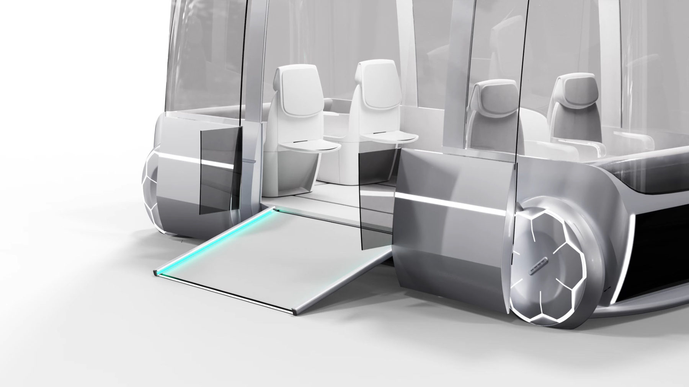
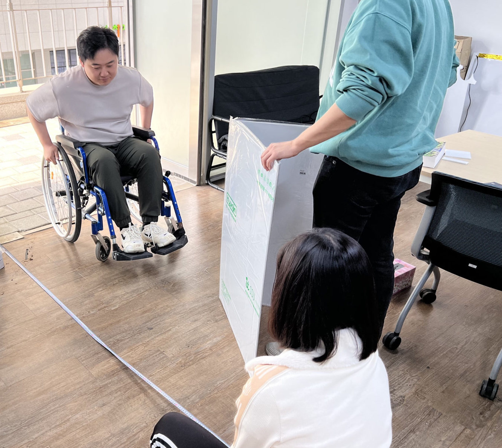
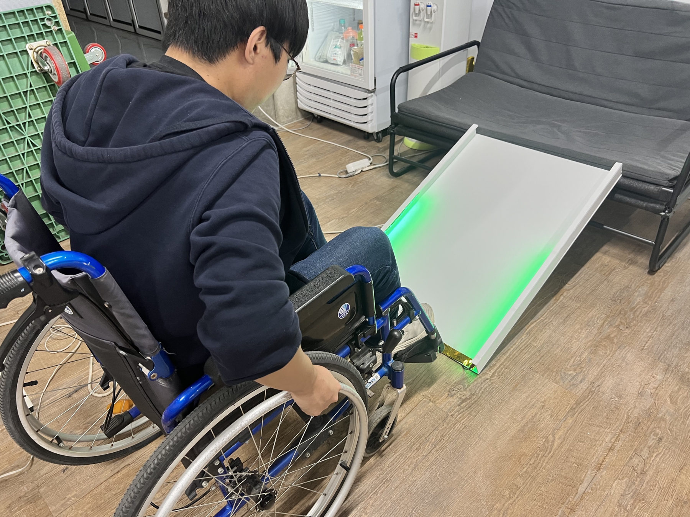
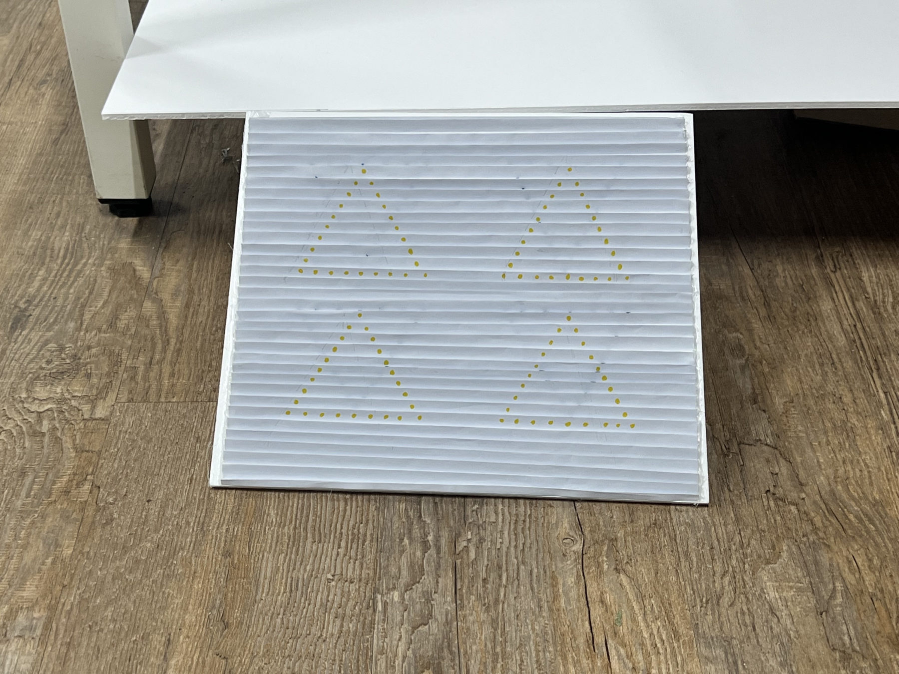
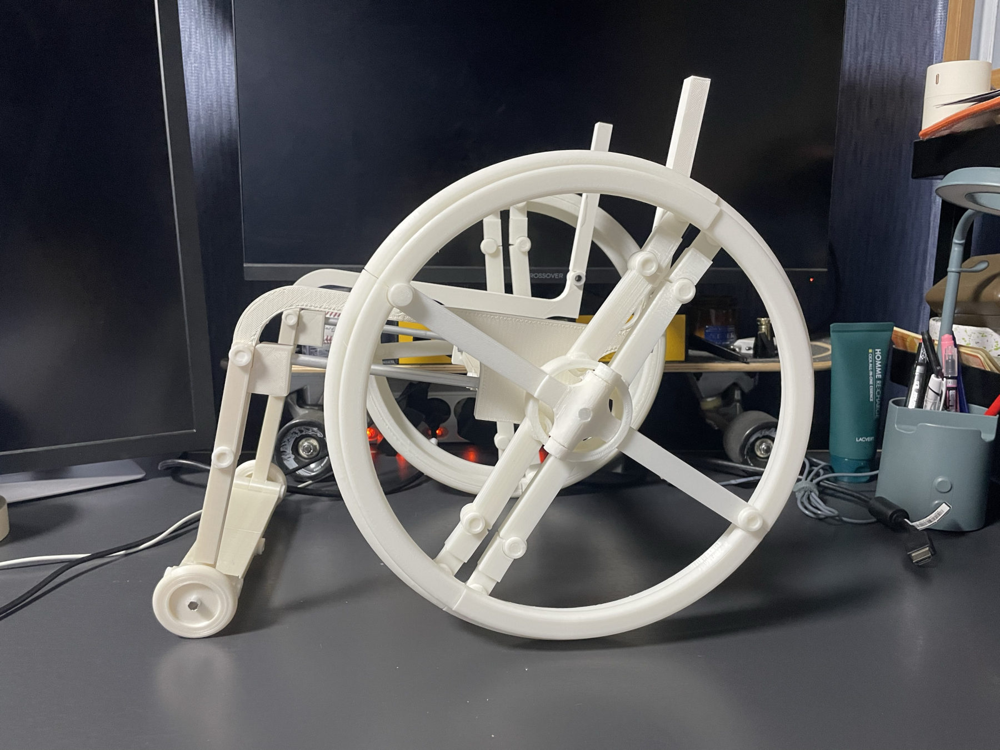
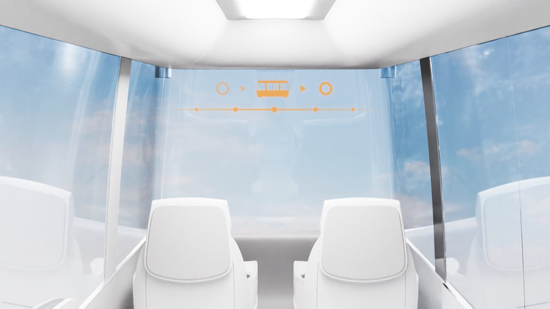
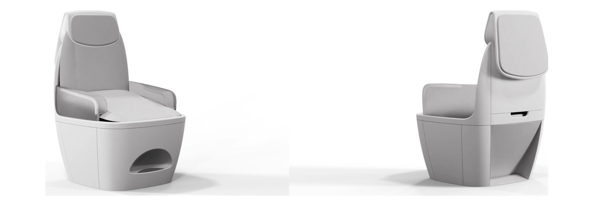
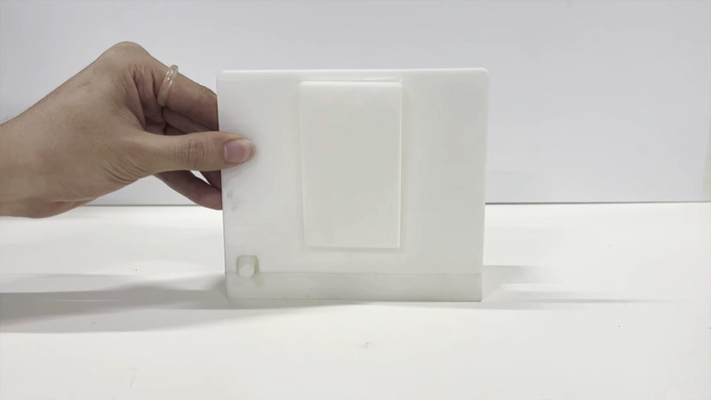
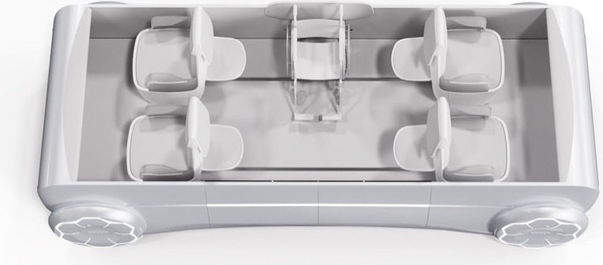
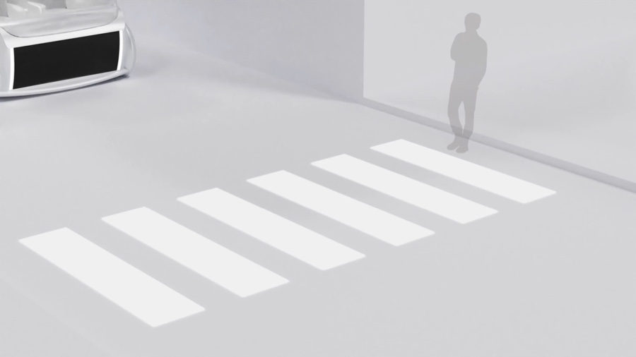

Inclusive Mobility.
시각·청각 장애인부터 노약자, 어린이까지 누구나 안전하게 타고 내릴 수 있는 PBV의 UX와 편의장치를 설계했습니다.

- HMC 2023.02 — 05 Hyundai Design Center 퓨처모빌리티디자인팀 산학 과제
- 1:1 Prototype 폼보드 · 3D 프린팅 도어 · 도어스텝 · 시트 목업
누구나 안전하게 타고 내리는 PBV
A PBV that anyone can board safely
양방향 슬라이드 도어와 도어스텝, 어시스트 시트, 휠체어 고정 장치, 논슬립 그래픽, eHMI까지 승하차와 실내 이동의 불편을 항목별로 찾아 해결안을 만들고, 3D 프린팅과 1:1 폼보드 목업으로 직접 타 보며 검증했습니다.
From two-way sliding doors and door steps to an assist seat, wheelchair lock, non-slip graphics and eHMI, each pain point in boarding and moving inside the cabin was turned into a solution and verified by actually using 3D-printed parts and full-scale foam-board mock-ups.

양방향 슬라이드 도어로 출입구를 완전히 열고, 도어스텝이 계단 또는 경사판으로 내려와 휠체어도 바로 탈 수 있습니다. 투명 디스플레이 보조도어와 탑승 신호 eHMI 시나리오도 함께 제안했습니다.
Two-way sliding doors open the entrance fully, and the door step lowers as stairs or a ramp so wheelchairs can board directly. A transparent-display auxiliary door and an eHMI boarding-signal scenario were also proposed.



실내에서는 일어서고 앉는 동작, 휠체어 고정, 좌석 배치를 다뤘습니다. 도어와 도어스텝은 1:1 목업으로 만들어 휠체어로 직접 진입하며 폭과 경사를 확인했습니다.
Inside, the work covered standing up and sitting down, securing wheelchairs and seat layout. The door and door step were built as full-scale mock-ups and checked by actually entering with a wheelchair.

노약자가 앉고 일어서는 동작을 돕는 어시스트 시트를 제안했습니다.
An assist seat was proposed to help elderly passengers sit down and stand up.



Wheelchair Lock
이동형 모빌리티 안에서 휠체어를 고정하는 장치를 제안했습니다.
A device that secures wheelchairs inside the moving vehicle.
Flexible Seating
상황에 따라 좌석 배치를 바꾸는 이동형 좌석 배치 시나리오를 제안했습니다.
A movable seating scenario that changes the layout to suit the situation.
차량 외부에서 이륜차에 승하차를 알리고 보행자에게 횡단을 안내하는 eHMI 시나리오를 제안했습니다.
eHMI scenarios were proposed to alert two-wheelers to boarding passengers and to guide pedestrians across.

애자일 방식으로 아이템을 빠르게 만들고 1:1 목업으로 확인하는 과정을 반복했습니다.
In an agile process, items were built quickly and checked again and again on full-scale mock-ups.